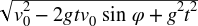
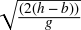
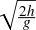
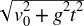
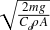

Chapter 6. Projectiles
This chapter is the first in a series of chapters that discuss specific real-world phenomena and systems, such as projectile motion and airplanes, with the goal of giving you a solid understanding of their real-life behavior. This understanding will help you to model these or similar systems accurately in your games. Instead of relying on purely idealized formulas, we’ll present a wide variety of practical formulas and data that you can use. We’ve chosen the examples in this and later chapters to illustrate common forces and phenomena that exists in many systems, not just the ones we’ll be discussing here. For example, while Chapter 16, “Ships and Boats,” discusses buoyancy in detail, buoyancy is not limited to ships; any object immersed in a fluid experiences buoyant forces. The same applies for the topics discussed in this chapter and Chapter 15, Chapter 17, Chapter 18, and Chapter 19.
Once you understand what’s supposed to happen with these and similar systems, you’ll be in a better position to interpret your simulation results to determine if they make sense—that is, if they are realistic enough. You’ll also be better educated on what factors are most important for a given system such that you can make appropriate simplifying assumptions to help ease your effort. Basically, when designing and optimizing your code, you’ll know where to cut things out without sacrificing realism. This gets into the subject of parameter tuning.
Over the next few chapters, we want to give you enough of an understanding of certain physical phenomenon such that you can tune your models for the desired behavior. If you are modeling several similar objects in your simulation but want each one to behave slightly differently, then you have to tune the forces that get applied to each object in order to achieve the varying behavior. Since forces govern the behavior of objects in your simulations, we’ll be focusing on force calculations with the intent of showing you how and why certain forces are what they are instead of simply using the idealized formulas discussed in Chapter 3. Parameter tuning isn’t just limited to tuning your model’s behavior—it also involves dealing with numerical issues, such as numerical stability in your integration algorithms. We’ll discuss these issues more when we show you several simulation examples in Chapter 7 through Chapter 14.
We’ve devoted this entire chapter to projectile motion because so many physical problems that may find their way into your games fall in this category. Further, the forces governing projectile motion affect many other systems that aren’t necessarily projectiles—for example, the drag force experienced by projectiles is similar to that experienced by airplanes, cars, or any other object moving through a fluid such as air or water.
A projectile is an object that is placed in motion by a force acting over a very short period of time, which, as you know from Chapter 5, is also called an impulse. After the projectile is set in motion by the initial impulse during the launching phase, the projectile enters into the projectile motion phase, where there is no longer a thrust or propulsive force acting on it. As you know already from the examples presented in Chapter 2 and Chapter 4, there are other forces that act on projectiles. (For the moment, we’re not talking about self-propelled “projectiles” such as rockets since, due to their propulsive force, they don’t follow “classical” projectile motion until after they’ve expended their fuel.)
In the simplest case, neglecting aerodynamic effects, the only force acting on a projectile other than the initial impulsive force is gravitation. For situations where the projectile is near the earth’s surface, the problem reduces to a constant acceleration problem. Assuming that the earth’s surface is flat—that is, that its curvature is large compared to the range of the projectile—the following statements describe projectile motion:
The trajectory is parabolic.
The maximum range, for a given launch velocity, occurs when the launch angle is 45°.
The velocity at impact is equal to the launch velocity when the launch point and impact point are at the same level.
The vertical component of velocity is 0 at the apex of the trajectory.
The time required to reach the apex is equal to the time required to descend from the apex to the point of impact assuming that the launch point and impact point are at the same level.
The time required to descend from the apex to the point of impact equals the time required for an object to fall the same vertical distance when dropped straight down from a height equal to the height of the apex.
Simple Trajectories
There are four simple classes of projectile motion problems that we’ll summarize:
When the target and launch point are at the same level
When the target is at a level higher than the launch point
When the target is at a level lower than the launch point
When the projectile is dropped from a moving system (like an airplane) above the target
In the first type of problem, the launch point and the target point are located on the same horizontal plane. In Figure 6-1, v0 is the initial velocity of the projectile at the time of launch, φ is the launch angle, R is the range of the projectile, and h is the height of the apex of the trajectory.

To solve this type of problem, use the formulas shown in Table 6-1. Note, in these formulas t represents any time instant after launch, and T represents the total time from launch to impact.
To calculate: | Use this formula: |
x(t) | (vo cos φ) t |
y(t) | (vo sin φ) t – (g t2) / 2 |
vx(t) | vo cos φ |
vy(t) | vo sin φ – g t |
v(t) |  |
h | (vo2 sin2 φ) / (2 g) |
R | vo T cos φ |
T | (2 vo sin φ) / g |
Remember to keep your units consistent when applying these formulas. If you are working in the SI (metric) system, length and distance values should be in meters (m); time should be in seconds (s); speed should be in meters per second (m/s); and acceleration should be in meters per second squared (m/s2). In the SI system, g is 9.8 m/s2.
In the second type of problem, the launch point is located on a lower horizontal plane than the target. In Figure 6-2, the launch point’s y coordinate is lower than the target’s y coordinate.
For this type of problem, use the formulas shown in Table 6-2. Notice that most of these formulas are the same as those shown in Table 6-1.
To calculate: | Use this formula: |
(t) | (vo cos φ) t |
y(t) | (vo sin φ) t – (g t2) / 2 |
vx(t) | vo cos φ |
vy(t) | vo sin φ – g t |
v(t) |
|
h | (vo2 sin2 φ) / (2 g) |
R | vo T cos φ |
T | (vo sin φ) / g +  |
Actually, the only formula that has changed is that for T, where it has been revised to account for the difference in elevation between the target and the launch point.
In the third type of problem, the target is located on a plane lower than the launch point; in Figure 6-3, the target’s y coordinate is lower than the launch point’s y coordinate.
Table 6-3 shows the formulas to use for this type of problem. Here again, almost all of the formulas are the same as those shown in Table 6-1.
To calculate: | Use this formula: |
x(t) | (vo cos φ) t |
y(t) | (vo sin φ) t – (g t2) / 2 |
vx(t) | vo cos φ |
vy(t) | vo sin φ – g t |
v(t) |
|
h | b + (vo2 sin2 φ) / (2 g) |
R | vo T cos φ |
T | (vo sin φ) / g +  |
The only formulas that have changed are the formulas for h and T, which have been revised to account for the difference in elevation between the target and the launch point (except this time the target is lower than the launch point).
Finally, the fourth type of problem involves dropping the projectile from a moving system, such as an airplane. In this case, the initial velocity of the projectile is horizontal and equal to the speed of the vehicle dropping it. Figure 6-4 illustrates this type of problem.
Table 6-4 shows the formulas to use to solve this type of problem. Note here that when vo is 0, the problem reduces to a simple free-fall problem in which the projectile drops straight down.
To calculate: | Use this formula: |
x(t) | vo t |
y(t) | h – (g t2) / 2 |
vx(t) | vo |
vy(t) | – g t |
v(t) |  |
h | (g t2) / 2 |
R | vo T |
T |
|
These formulas are useful if you’re writing a game that does not require a more accurate treatment of projectile motion—that is, if you don’t need or want to consider the other forces that can act on a projectile when in motion. If you are going for more accuracy, you’ll have to consider these other forces and treat the problem as we did in Chapter 4’s example.
Drag
In Chapter 3 and Chapter 4, we showed you the idealized formulas for viscous fluid dynamic drag as well as how to implement drag in the equations of motion for a projectile. This was illustrated in the example program discussed in Chapter 4. Recall that the drag force is a vector just like any other force and that it acts on the line of action of the velocity vector but in a direction opposing velocity. While those formulas work in a game simulation, as we said before, they don’t tell the whole story. While we can’t treat the subject of fluid dynamics in its entirety in this book, we do want to give you a better understanding of drag than just the simple idealized equation presented earlier.
Analytical methods can show that the drag on an object moving through a fluid is proportional to its speed, size, shape, and the density and viscosity of the fluid through which it is moving. You can also come to these conclusions by drawing on your own real-life experience. For example, when waving your hand through the air, you feel very little resistance; however, if you put your hand out of a car window traveling at 100 km/h, then you feel much greater resistance (drag force) on your hand. This is because drag is speed dependent. When you wave your hand underwater—say, in a swimming pool—you’ll feel a greater drag force on your hand than you do when waving it in the air. This is because water is more dense and viscous than air. As you wave your hand underwater, you’ll notice a significant difference in drag depending on the orientation of your hand. If your palm is in line with the direction of motion—that is, you are leading with your palm—then you’ll feel a greater drag force than you would if your hand were turned 90 degrees as though you were executing a karate chop through the water. This tells you that drag is a function of the shape of the object. You get the idea.
To facilitate our discussion of fluid dynamic drag, let’s look at the flow around a sphere moving through a fluid such as air or water. If the sphere is moving slowly through the fluid, the flow pattern around the sphere would look something like Figure 6-5.
Bernoulli’s equation, which relates pressure to velocity in fluid flow, says that as the fluid moves around the sphere and speeds up, the pressure in the fluid (locally) will go down. The equation, presented by Daniel Bernoulli in 1738, applies to frictionless incompressible fluid flow and looks like this:[15]
| P / γ + z + V2 / (2g) = constant |
where P is the pressure at a point in the fluid volume under consideration, γ is the specific weight of the fluid, z is the elevation of the point under consideration, V is the fluid velocity at that point, and g is the acceleration due to gravity. As you can see, if the expression on the left is to remain constant, and assuming that z is constant, then if velocity increases the pressure must decrease. Likewise, if pressure increases, then velocity must decrease.
As you can see in Figure 6-5, the pressure will be greatest at the stagnation point, Sl, and will decrease around the leading side of the sphere and then start to increase again around the back of the sphere. In an ideal fluid with no friction, the pressure is fully recovered behind the sphere and there is a trailing stagnation point, St, whose pressure is equal to the pressure at the leading stagnation point. Since the pressure fore and aft of the sphere is equal and opposite, there is no net drag force acting on the sphere.
The pressure on the top and bottom of the sphere will be lower than at the stagnation points since the fluid velocity is greater over the top and bottom. Since this is a case of symmetric flow around the sphere, there will be no net pressure difference between the top and bottom of the sphere.
In a real fluid there is friction, which affects the flow around the sphere such that the pressure is never fully recovered on the aft side of the sphere. As the fluid flows around the sphere, a thin layer sticks to the surface of the sphere due to friction. In this boundary layer, the speed of the fluid varies from 0 at the sphere surface to the ideal free stream velocity, as illustrated in Figure 6-6.
This velocity gradient represents a momentum transfer from the sphere to the fluid and gives rise to the frictional component of drag. Since a certain amount of fluid is sticking to the sphere, you can think of this as the energy required to accelerate the fluid and move it along with the sphere. (If the flow within this boundary layer is laminar, then the viscous shear stress between fluid “layers” gives rise to friction drag. When the flow is turbulent, the velocity gradient and thus the transfer of momentum gives rise to friction drag.)
Moving further aft along the sphere, the boundary layer grows in thickness and will not be able to maintain its adherence to the sphere surface, and it will separate at some point. Beyond this separation point, the flow will be turbulent, and this is called the turbulent wake. In this region, the fluid pressure is lower than that at the front of the sphere. This pressure differential gives rise to the pressure component of drag. Figure 6-7 shows how the flow might look.
For a slowly moving sphere, the separation point will be approximately 80° from the leading edge.
Now, if you were to roughen the surface of the sphere, you’ll affect the flow around it. As you would expect, this roughened sphere will have a higher friction drag component. However, more importantly, the flow will adhere to the sphere longer and the separation point will be pushed further back to approximately 115°, as shown in Figure 6-8.

This will reduce the size of the turbulent wake and the pressure differential, thus decreasing the pressure drag. It’s paradoxical but true that, all other things being equal, a slightly roughened sphere will have less total drag than a smooth one. Ever wonder why golf balls have dimples? If so, there’s your answer.
The total drag on the sphere depends very much on the nature of the flow around the sphere—that is, whether the flow is laminar or turbulent. This is best illustrated by looking at some experimental data. Figure 6-9 shows a typical curve of the total drag coefficient for a sphere plotted as a function of the Reynolds number.
The Reynolds number (commonly denoted Nr or Rn) is a dimensionless number that represents the speed of fluid flow around an object. It’s a little more than just a speed measure, since it includes a characteristic length for the object and the viscosity and density of the fluid. The formula for the Reynolds number is:
| Rn = (v L)/υ |
or,
| Rn = (v L ρ)/µ |
where v is speed, L is a characteristic length of the object (diameter for a sphere), υ is the kinematic viscosity of the fluid, ρ is the fluid mass density, and µ is the absolute viscosity of the fluid. For the Reynolds number to work out as a dimensionless number velocity, length and kinematic viscosity must have units of m/s, m, and m2/s, respectively, within the SI system.
This number is useful for non-dimensionalizing data measured from tests on an object of given size (like a model) such that you can scale the data to estimate the data for similar objects of different size. Here “similar” means that the objects are geometrically similar, just different scales, and that the flow pattern around the objects is similar. For a sphere the characteristic length is diameter, so you can use drag data obtained from a small model sphere of given diameter to estimate the drag for a larger sphere of different diameter. A more useful application of this scaling technique is estimating the viscous drag on ship or airplane appendages based on model test data obtained from wind tunnel or tow tank experiments.
The Reynolds number is used as an indicator of the nature of fluid flow. A low Reynolds number generally indicates laminar flow, while a high Reynolds number generally indicates turbulent flow. Somewhere in between, there is a transition range where the flow makes the transition from laminar to turbulent flow. For carefully controlled experiments, this transition (critical) Reynolds number can consistently be determined. However, in general the ambient flow field around an object—that is, whether it has low or high turbulence—will affect when this transition occurs. Further, the transition Reynolds number is specific to the type of problem being investigated (for example, whether you’re looking at flow within pipes, the flow around a ship, or the flow around an airplane, etc.).
We calculate the total drag coefficient, Cd, by measuring the total resistance, Rt, from tests and using the following formula:
| Cd = Rt / (0.5 ρ v2 A) |
where A is a characteristic area that depends on the object being studied. For a sphere, A is typically the projected frontal area of the sphere, which is equal to the area of a circle of diameter equal to that of the sphere. By comparison, for ship hulls, A is typically taken as the underwater surface area of the hull. If you work out the units on the righthand side of this equation, you’ll see that the drag coefficient is nondimensional (i.e., it has no units).
Given the total drag coefficient, you can estimate the total resistance (drag) using the following formula:
| Rt = (0.5 ρ v2 A) Cd |
This is a better equation to use than the ones given in Chapter 3, assuming you have sufficient information available—namely, the total drag coefficient, density, velocity, and area. Note the dependence of total resistance on velocity squared. To get Rt in units of newtons (N), you must have velocity in m/s, area in m2, and density in kg/m3 (remember Cd is dimensionless).
Turning back now to Figure 6-9, you can make a couple of observations. First, you can see that the total drag coefficient decreases as the Reynolds number increases. This is due to the formation of the separation point and its subsequent move aft on the sphere as the Reynolds number increases and the relative reduction in pressure drag, as discussed previously. At a Reynolds number of approximately 250,000, there is a dramatic reduction in drag. This is a result of the flow becoming fully turbulent with a corresponding reduction in pressure drag.
In the Cannon2 example in Chapter 4, we implemented the ideal formula for air drag on the
projectile. In that case we used a constant value of drag coefficient that
was arbitrarily defined. As we said earlier, it would be better to use the
formula presented in this chapter for total drag along with the total drag
coefficient data shown in Figure 6-9 to estimate the drag
on the projectile. While this is more “accurate,” it does complicate
matters for you. Specifically, the drag coefficient is now a function of
the Reynolds number, which is a function of velocity. You’ll
have to set up a table of drag coefficients versus the Reynolds number and
interpolate this table given the Reynolds number calculated at each time
step. As an alternative, you can fit the drag coefficient data to a curve
to derive a formula that you can use instead; however, the drag
coefficient data may be such that you’ll have to use a piecewise approach
and derive curve fits for each segment of the drag coefficient curve. The
sphere data presented herein is one such case. The data does not lend
itself nicely to a single polynomial curve fit over the full range of the
Reynolds number. In such cases, you’ll end up with a handful of formulas
for drag coefficient, with each formula valid over a limited range of
Reynolds numbers.
While the Cannon2 example does
have its limitations, it is useful to see the effects of drag on the
trajectory of the projectile. The obvious effect is that the trajectory is
no longer parabolic. You can see in Figure 6-10 that the trajectory
appears to drop off much more sharply when the projectile is making its
descent after reaching its apex height.
Another important effect of drag on trajectory (this applies to objects in free fall as well) is the fact that drag will limit the maximum vertical velocity attainable. This limit is the so-called terminal velocity. Consider an object in free fall for a moment. As the object accelerates toward the earth at the gravitation acceleration, its velocity increases. As velocity increases, so does drag since drag is a function of velocity. At some speed the drag force retarding the object’s motion will increase to a point where it is equal to the gravitational force that’s pulling the object toward the earth. In the absence of any other forces that may affect motion, the net acceleration on the object is 0, and it continues its descent at the constant terminal velocity.
Let us illustrate this further. Go back to the formula we derived
for the y component (vertical component) of velocity
for the projectile modeled in the Cannon2 example. Here it is again so you don’t
have to flip back to Chapter 4:
| vy2 = (1 / Cd) e(–Cd/m)t (Cd vy1 + m g) – (m g) / Cd |
It isn’t obvious from looking at this equation, but the velocity component, vy2, asymptotes to some constant value as time increases. To help you visualize this, we’ve plotted this equation, as shown in Figure 6-11.
As you can see, over time the velocity reaches a maximum absolute value of about −107.25 speed units. The negative velocities indicate that the velocity is in the negative y-direction—that is, the object is falling toward the earth in this case. (For this calculation we arbitrarily assumed a mass of 100, a drag coefficient of 30, and an initial velocity of 0.)
Assuming an initial velocity of 0 and equating the formula for total resistance shown earlier to the weight of an object, you can derive the following formula for terminal velocity for an object in free fall:
| vt =  |
The trick in applying this formula is in determining the right value for the drag coefficient. Just for fun, let’s assume a drag coefficient of 0.5 and calculate the terminal velocity for several different objects. This exercise will allow you to see the influence of the object’s size on terminal velocity. Table 6-5 gives the terminal velocities for various objects in free fall using an air density of 1.225 kg/m3 (air at standard atmospheric pressure at 15°C). Using this equation with density in kg/m3 means that m must be in kg, g in m/s2, and A in m2 in order to get the terminal speed in m/s. We went ahead and converted from m/s to kilometers per hour (km/h) to present the results in Table 6-5. The weight of each object shown in this table is simply its mass, m, times g.
Object | Weight (N) | Area (m2) | Terminal velocity (km/h) |
Skydiver in free fall | 801 | 0.84 | 201 |
Skydiver with open parachute | 801 | 21.02 | 40 |
Baseball (2.88 in diameter) | 1.42 | 4.19×10−3 | 121 |
Golf ball (1.65 in diameter) | 0.5 | 1.40×10−3 | 116 |
Raindrop (0.16 in diameter) | 3.34×10−4 | 1.29×10−5 | 32 |
Although we’ve talked mostly about spheres in this section, the discussions on fluid flow generally apply to any object moving through a fluid. Of course, the more complex the object’s geometry, the harder it is to analyze the drag forces on it. Other factors such as surface condition, and whether or not the object is at the interface between two fluids (such as a ship in the ocean) further complicate the analysis. In practice, scale model tests are particularly useful. In the Bibliography, we give several sources where you can find more practical drag data for objects other than spheres.
Magnus Effect
The Magnus effect (also known as the Robbins effect) is quite an interesting phenomenon. You know from the previous section that an object moving through a fluid encounters drag. What would happen if that object were now spinning as it moved through the fluid? For example, consider the sphere that we talked about earlier and assume that while moving through a fluid such as air or water, it spins about an axis passing through its center of mass. What happens when the sphere spins is the interesting part—it actually generates lift! That’s right, lift. From everyday experience, most people usually associate lift with a wing-like shape such as an airplane wing or a hydrofoil. It is far less well known that cylinders and spheres can produce lift as well—that is, as long as they are spinning. We’ll use the moving sphere to explain what’s happening here.
From the previous section on drag, you know that for a fast-moving sphere there will be some point on the sphere where the flow separates, creating a turbulent wake behind the sphere. Recall that the pressure acting on the sphere within this turbulent wake is lower than the pressure acting on the leading surface of the sphere, and this pressure differential gives rise to the pressure drag component. When the sphere is spinning—say, clockwise—about a horizontal axis passing through its center, as shown in Figure 6-12, the fluid passing over the top of the sphere will be sped up while the fluid passing under the sphere will be retarded.
Remember, because of friction, there is a thin boundary layer of fluid that attaches to the sphere’s surface. At the sphere’s surface, the velocity of the fluid in the boundary layer is 0 relative to the sphere. The velocity increases within the boundary layer as you move further away from the sphere’s surface. In the case of the spinning sphere, there is now a difference in fluid pressure above and below the sphere due to the increase in velocity above the sphere and the decrease in velocity below the sphere. Further, the separation point on the top side of the sphere will be pushed further back along the sphere. The end result is an asymmetric flow pattern around the sphere with a net lift force (due to the pressure differential) perpendicular to the direction of flow. If the surface of the sphere is roughened a little, not only will frictional drag increase, but this lift effect will increase as well.
Don’t let the term lift confuse you into thinking that this force always acts to lift, or elevate, the sphere. The effect of this lift force on the sphere’s trajectory is very much tied to the axis of rotation about which the sphere is spinning as related to the direction in which the sphere is traveling (that is, its angular velocity).
The magnitude of the Magnus force is proportional to the speed of travel, rate of spin, density of fluid, size of the object, and nature of the fluid flow. This force is not easy to calculate analytically, and as with many problems in fluid dynamics, you must rely on experimental data to accurately estimate it for a specific object under specific conditions. There are, however, some analytical techniques that will allow you to approximate the Magnus force. Without going into the theoretical details, you can apply the Kutta-Joukouski theroem to estimate the lift force on rotating objects such as cylinders and spheres. The Kutta-Joukouski theorem is based on a frictionless idealization of fluid flow involving the concept of circulation around the object (like a vortex around the object). You can find the details of this theory in any fluid dynamics text (we give some references in the Bibliography), so we won’t go into the details here. However, we will give you some results.
For a spinning circular cylinder moving through a fluid, you can use this formula to estimate the Magnus lift force:
| FL = 2 π ρ L v r2 ω |
where v is the speed of travel, L is the length of the cylinder, r is its radius, and ω is its angular velocity in radians per second (rad/s). If you have spin, n, in revolutions per second (rps), then ω = 2 π n. If you have spin, n, in revolutions per minute (rpm), then ω = (2 π n) / 60.
For a spinning sphere moving through a fluid, you can use this formula:
| FL = (2 π ρ v r4 ω) / (2 r) |
where r is the radius of the sphere. Consistent units for these equations would yield lift force in pounds in the English system or newtons in the SI system. In the SI system, the appropriate units for these quantities are kg/m3, m/s, and m, respectively.
Keep in mind that these formulas only approximate the Magnus force; they’ll get you in the ballpark, but they are not exact and actually could be off by up to 50% depending on the situation. These formulas assume that 1) there is no slip between the fluid and the rotating surface of the object, 2) there is no friction, 3) surface roughness is not taken into account, and 4) there is no boundary layer.
At any rate, these equations will allow you to approximate the Magnus effect for flying objects in your games, where you’ll be able to model the relative differences between objects of different size that may be traveling at different speeds with different spin rates. You’ll get the look right. If numerical accuracy is what you’re looking for, then you’ll have to turn to experimental data for your specific problem.
Similar to the drag data shown in the previous section, experimental lift data is generally presented in terms of lift coefficient. Using an equation similar to the drag equation, you can calculate the lift force with the following equation:
| FL = (0.5 ρ v2 A) CL |
As usual, it’s not as simple as this equation makes it appear. The trick is in determining the lift coefficient, CL, which is a function of surface conditions, the Reynolds number, velocity, and spin rate. Further, experiments show that the drag coefficient is also affected by spin.
For example, consider a golf ball struck perfectly (right!) such that the ball spins about a horizontal axis perpendicular to its direction of travel while in flight. In this case the Magnus force will tend to lift the ball higher in the air, increasing its flight time and range. For a golf ball struck such that its initial velocity is 58 m/s with a take-off angle of 10 degrees, the increase in range due to Magnus lift is on the order of 59 meters; thus, it’s clear that this effect is significant. In fact, over the long history of the game of golf, people have attempted to maximize this effect. In the late 1800s, when golf balls were still made with smooth surfaces, players observed that used balls with roughened surfaces flew even better than smooth balls. This observation prompted manufacturers to start making balls with rough surfaces so as to maximize the Magnus lift effect. The dimples that you see on modern golf balls are the result of many decades of experience and research and are thought to be optimum.
Typically a golf ball takes off from the club with an initial velocity on the order of 76 m/s, with a backspin on the order of 60 revolutions per second (rps). For these initial conditions, the corresponding Magnus lift coefficient is within the range of 0.1 to 0.35. Depending on the spin rate, this lift coefficient can be as high as 0.45, and the lift force acting on the ball can be as much as 50% of the ball’s weight.
If the golf ball is struck with a less-than-perfect stroke (that’s more like it), the Magnus lift force may work against you. For example, if your swing is such that the ball leaves the club head spinning about an axis that is not horizontal, then the ball’s trajectory will curve, resulting in a slice or a draw. If you top the ball such that the upper surface of the ball is spinning away from you, then the ball will tend to curve downward much more rapidly, significantly reducing the range of your shot.
As another example, consider a baseball pitched such that it’s spinning with topspin about a horizontal axis perpendicular to its direction of travel. Here the Magnus force will tend to cause the ball to curve in a downward direction, making it drop more rapidly than it otherwise would without spin. If the pitcher spins the ball such that the axis of rotation is not horizontal, then the ball will curve out of the vertical plane. Another trick that pitchers use is to give the ball backspin, making it appear (to the batter) to actually rise. This rising fastball does not actually rise, but because of the Magnus lift force it falls much less rapidly than it would without spin.
For a typical pitched speed and spin rate of 45 m/s and 30 rps, respectively, the lift force can be up to 33% of the ball’s weight. For a typical curveball, the lift coefficient is within the range of 0.1 to 0.2, and for flyballs it can be up to 0.4.
These are only two examples; however, you need not look far to find other examples of the Magnus force in action. Think about the behavior of cricket balls, soccer balls, tennis balls, or ping-pong balls when they spin in flight. Bullets fired from a gun with a rifling barrel also spin and are affected by this Magnus force. There have even been sailboats built with tall, vertical, rotating cylindrical “sails” that use the Magnus force for propulsion. We’ve also seen technical articles describing a propeller with spinning cylindrical blades instead of airfoil-type blades.
To further illustrate the Magnus effect, we’ve prepared a simple example program that simulates a ball being thrown with varying amounts of backspin (or topspin). This example is based on the cannon example, so here again, the code should look familiar to you. In this example we’ve neglected drag, so the only forces that the ball will see are due to gravity and the Magnus effect. We did this to isolate the lift-generating effect of spin and to keep the equations of motion clearer.
Since most of the code for this example is identical, or very
similar, to the previous cannon examples, we won’t repeat it here. We
will, however, show you the global variables used in this simulation along
with a revised DoSimulation function
that takes care of the equations of motion:
//----------------------------------------------------------------------------//
// Global variables required for this simulation
//----------------------------------------------------------------------------//
TVector V1; // Initial velocity (given), m/s
TVector V2; // Velocity vector at time t, m/s
double m; // Projectile mass (given), kg
TVector s1; // Initial position (given), m
TVector s2; // The projectile's position (displacement) vector, m
double time; // The time from the instant the projectile
// is launched, s
double tInc; // The time increment to use when stepping
// through the simulation, s
double g; // acceleration due to gravity (given), m/s^2
double spin; // spin in rpm (given)
double omega; // spin in radians per second
double radius; // radius of projectile (given), m
#define PI 3.14159f
#define RHO 1.225f // kg/m^3
//----------------------------------------------------------------------------//
int DoSimulation(void)
//----------------------------------------------------------------------------//
{
double C = PI * PI * RHO * radius * radius * radius * omega;
double t;
// step to the next time in the simulation
time+=tInc;
t = time;
// Calc. V2:
V2.i = 1.0f/(1.0f-(t/m)*(t/m)*C*C) * (V1.i + C * V1.j * (t/m) −
C * g * (t*t)/m);
V2.j = V1.j + (t/m)*C*V2.i - g*t;
// Calc. S2:
s2.i = s1.i + V1.i * t + (1.0f/2.0f) * (C/m * V2.j) * (t*t);
s2.j = s1.j + V1.j * t + (1.0f/2.0f) * ( ((C*V2.i) - m*g)/m ) * (t*t);
// Check for collision with ground (x-z plane)
if(s2.j <= 0)
return 2;
// Cut off the simulation if it's taking too long
// This is so the program does not get stuck in the while loop
if(time>60)
return 3;
return 0;
}The heart of this simulation is the lines that calculate V2 and s2,
the instantaneous velocity and position of the projectile, respectively.
The equations of motion here come from the 2D kinetic equations of motion
including gravity, as discussed in Chapter 4, combined
with the following formula (shown earlier) for estimating the Magnus lift
on a spinning sphere:
| FL = (2 π2 ρ v r4 ω) / (2 r) |
You can see the effect of spin on the projectile’s trajectory by
providing the sample program with different values for spin in revolutions
per minute. The program converts this to radians per second and stores
this value in the variable omega. A
positive spin value indicates bottom spin such that the bottom of the
sphere is spinning away from you, while a negative spin indicates topspin,
where the top of the ball spins away from you. Bottom spin generates a
positive lift force that will tend to extend the range of the projectile,
while topspin generates negative lift that will force the projectile
toward the ground, shortening its range. (Note that this example assumes
that the spin axis is horizontal and perpendicular to the plane of the
screen.) Figure 6-13 illustrates this
behavior.
Variable Mass
In Chapter 1 we mentioned that some problems in dynamics involve variable mass. We’ll look at variable mass here since it applies to self-propelled projectiles such as rockets. When a rocket is producing thrust to accelerate, it loses mass (fuel) at some rate. When all of the fuel is consumed (burnout), the rocket no longer produces thrust and has reached its maximum speed. After burnout you can treat the trajectory of the rocket just as you would a non-self-propelled projectile, as discussed earlier. However, while the rocket is producing thrust, you need to consider its mass change since this will affect its motion.
In cases where the mass change of the object under consideration is such that the mass being expelled or taken in has 0 absolute velocity—like a ship consuming fuel, for example—you can set up the equations of motion as you normally would, where the sum of the forces equals the rate of change in momentum. However, in this case mass will be a function of time, and your equations of motion will look like this:
| ΣF = m a = d/dt (m v) =m (dv/dt) + (dm/dt) v |
You can proceed to solve them just as you would normally, but keep in mind the time dependence of mass.
A rocket, on the other hand, expels mass at some nonzero velocity, and you can’t use the preceding approach to properly account for its mass change. In this case, you need to consider the relative velocity between the expelled mass and the rocket itself. The linear equation of motion now looks like this:
| ΣF = m dv/dt + dm/dt u |
where u is the relative velocity between the expelled mass and the object (the rocket in this case).
For a rocket traveling straight up, neglecting air resistance and the pressure at the exhaust nozzle, the only force acting on the rocket is due to gravity. But the rocket is expelling mass (burning fuel). How it expels this mass is not important here, since the forces involved are internal to the rocket; we need to consider only the external forces. Let the fuel burn rate be –m’. The equation of motion (in the vertical direction) for the rocket is as follows:
| ΣF = m dv/dt + dm/dt u |
| −mg = m dv/dt − m’ u |
If you rearrange this so that it looks like there’s only an ma term on the right of this equation, you get:
| m’ u − mg = m dv/dt = ma |
Here you can see that the thrust that propels the rocket into the air is equal to m’u. Since the fuel burn rate is constant, the mass of the rocket at any instant in time is equal to:
| m = mo − m’ t |
where mo is the initial mass, and the burn rate, m’, is in the form mass per unit time.
[15] In a real fluid with friction, this equation will have extra terms that account for energy losses due to friction.
[16] The curve shown here is intended to demonstrate the trend of Cd versus Rn for a smooth sphere. For more accurate drag coefficient data for spheres and other shapes, refer to any college-level fluid mechanics text, such as Robert L. Daugherty, Joseph B. Franzini, and E. John Finnemore’s Fluid Mechanics with Engineering Applications (McGraw-Hill).